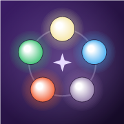

Il punto di ritrovo del gruppo Commander
Nomi, comandanti, colori e sfondi restano: ripartono solo i punteggi.
👥 Per aggiungere amici, invitarli alle partite e vedere i loro mazzi serve un account.
Il tuo codice amico è

Chiedi il codice a chi ha creato il tavolo: entrando occupi il primo posto libero.
Chi siede al tavolo vede e aggiorna la partita in tempo reale.
Chi lo inserisce in "🚪 Unisciti a un tavolo" entra e occupa il primo posto libero.
Mazzi e partite salvati prima degli account sono solo su questo dispositivo: spostali nel tuo account per ritrovarli ovunque e farli contare nelle statistiche.
Accedi per avere i tuoi mazzi, le tue statistiche e i tuoi amici su qualsiasi dispositivo.
oppure con email e password
Come vuoi che ti vedano gli amici?
Dallo agli amici: con questo codice possono mandarti una richiesta di amicizia.
Incolla la lista esportata da Moxfield, Archidekt o scritta a mano: una carta per riga, con il numero di copie davanti e il nome in inglese. Per indicare il comandante metti la sua riga sotto il titolo Commander (oppure sceglilo dopo, dal mazzo).
Dopo il salvataggio i punteggi si azzerano per la prossima partita.